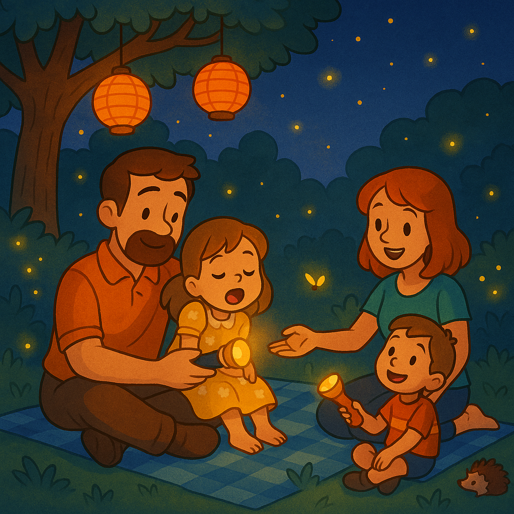

Es ist früher Morgen, und die Sonne kitzelt bereits die ersten Blüten im Garten. Heute feiert Mia ihren siebten Geburtstag. Papa hängt bunte Lampions in die Apfelbäume, Mama deckt den Gartentisch mit Törtchen, Limonade und selbstgebackenen Keksen. Mia trägt ihr Lieblingskleid mit gelben Gänseblümchen und kann vor Aufregung kaum stillsitzen.
Als erste Gäste kommen Oma und Opa, beladen mit einem Topf voller Lavendel und einem Korb voller Erdbeeren. „Die Vögel stimmen das Geburtstagslied an!“, ruft Opa lachend – und tatsächlich beginnt ein Meisenpärchen in der Hecke zu zwitschern. Kurz darauf trudelt Mias beste Freundin Lara herbei, gefolgt von ihrem kleinen Bruder Timmy, der ein mit Luftballons geschmücktes Fahrrad durchs Gras schiebt.
Papa läutet eine kleine Zinkglocke: „Alle herhören – die Schatzsuche beginnt!“ Aufgeregt folgen die Kinder einer Karte, die Papa in einem Einmachglas versteckt hat. Zwischen Tomatenpflanzen und Rosenbüschen suchen sie nach Hinweisen: ein glitzernder Stein unter der Lavendelhecke, ein rotes Band am Gartenschlauch und schließlich eine Botschaft in einer alten Holzschachtel: „Glückwunsch – der Schatz wartet unter der großen Eiche.“
Mia gräbt vorsichtig im weichen Moos und fördert eine kleine Truhe zutage. Darin liegen Gartenhandschuhe in Kindergröße, bunte Samenpäckchen und eine Mini-Gießkanne – Mamas Geschenk für das nächste Frühjahr. Mia strahlt und umarmt ihre Eltern.
Zurück am Tisch singen alle das Geburtstagslied. Oma überreicht ein Fotoalbum mit Familienbildern im Garten – vom Erdbeerpflücken bis zum Zwergentanz um die Hütte. Jeder Moment löst herzliches Lachen aus. Mia pustet die Kerzen auf ihrem Schokoladentörtchen aus: „Drei… zwei… eins!“ Und der Garten erklingt im Applaus.
Am Nachmittag sitzen alle entspannt im Schatten der Eiche. Timmy füttert ein Eichhörnchen mit Haselnüssen, Lara und Mia lassen Papiersternchen in ihrer „Wunschregentonne“ baden. Die Limonade schmeckt süß und kühl, der Lavendelduft weht leise herüber.
Wenn die Sonne untergeht und die ersten Glühwürmchen tanzen, wirft Mama Decken ins Gras und verteilt Taschenlampen. Die Familie kuschelt sich zusammen, um im letzten Licht ein leises Gute-Nacht-Lied zu hören. Zufrieden gähnt Mia: Ihr Geburtstagsfest im Garten war ein Tag voller Farben, Lachen und kleiner Wunder.